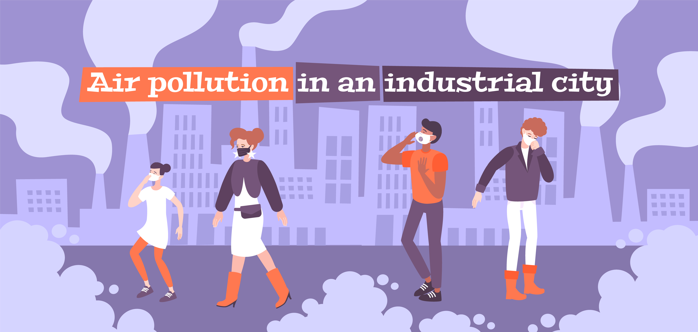

Actividad 2: Los males del aire
- Duración:
- 2 sesiones
- Agrupamiento:
- Individual

Imagen de macrovector</a> en Freepik
Segunda actividad sobre la atmosfera de nuestro planeta:
INSTRUCCIONES: Deberéis realizar de forma individual un mapa mental sobre los principales problemas medioambientales ligados a la atmósfera. Para ello trabajaremos primero siguiendo la técnica cooperativa de grupo de expertos. Cada uno de los miembros del grupo se especializará en una problemática en concreto para posteriormente reunirse todos los miembros y explicar al resto de compañeros la problemática de la que se ha encargado. Por último de forma individual cada uno realizará un mapa mental en un A3 con todos los problemas tratados.
Aquí tenéis enlaces con la información necesaria:
CALENTAMIENTO GLOBAL: EL CAMBIO CLIMÁTICO
- Libro de texto. Tema atmósfera.
- Naciones Unidas (ONU): El cambio climático Acción por el clima.
- Greenpeace: Cambio Climático
- Wikipedia: Cambio Climático
EL AGUJERO DE LA CAPA DE OZONO
- Libro de texto. Tema atmósfera.
- Revista National Geographic: Agujero record.
- Periódico EL PAIS: Agujero de ozono
- Wikipedia: Agujero de la capa de ozono
LLUVIA ÁCIDA
- Libro de texto. Tema atmósfera.
- Ecología Verde: La lluvia ácida.
- Revista National Geographic: Lluvia ácida
- Wikipedia: Lluvia ácida
OZONO TROPOSFÉRICO
- Libro de texto. Tema atmósfera.
- Ecología Verde: El ozono troposferico.
- Ecologistas en acción: Ozono troposférico